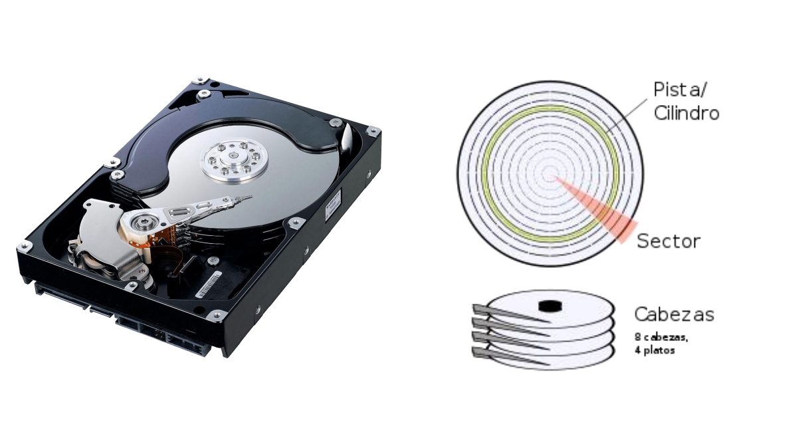
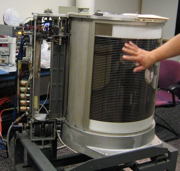
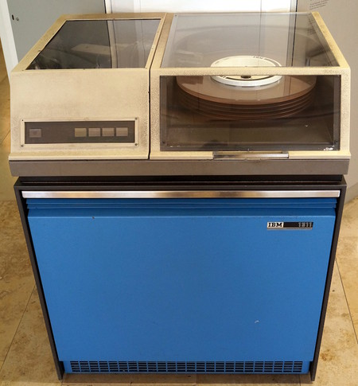
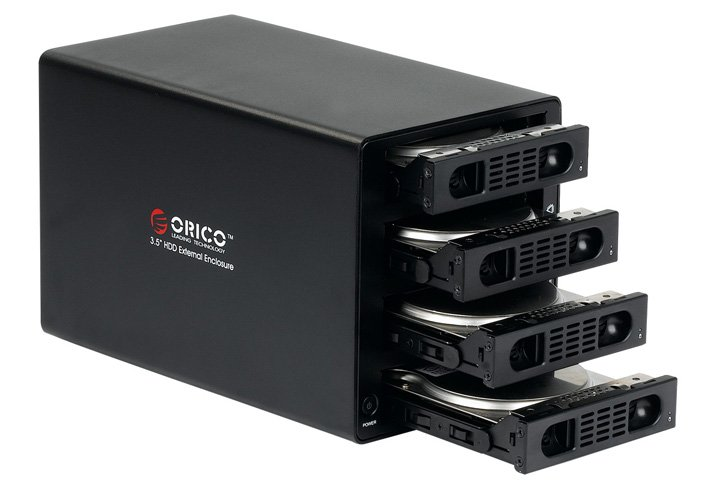
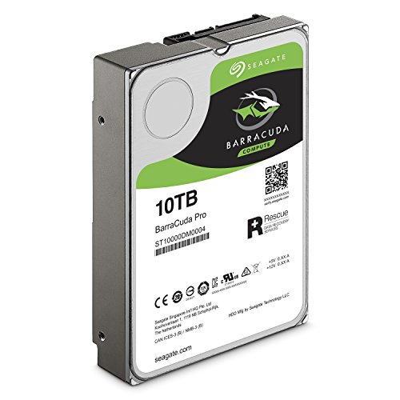

Discos y unidades
CD y DVD.jpg)
El disco duro es un dispositivo de almacenamiento de datos, compuesto de uno o mas platos tambien llamados discos rígidos, cubiertos por un material magnetico y unidos en el mismo eje, que giran en una caja metalica sellada. Sobre cada plato, y en cada una de sus caras, se sitúa un cabezal de lectura/escritura que flota sobre una delgada lámina de aire generada por la rotación de los discos. Permite el acceso aleatorio a los datos, lo que significa que los bloques de datos se pueden almacenar o recuperar en cualquier orden y no solo de forma secuencial. Las unidades de disco duro son un tipo de memoria no volátil, que retienen los datos almacenados incluso cuando están apagados
⠀
⠀
Las unidades CD era un dispositivo era un dispositivo que perimitia la lectrura de estos CDS mediante un rayo laser y impulsos electricos.⠀
Historia:⠀
Comenzamos con 1956 y IBM presenta el primer disco duro en el sistema llamado RAMAC 305. Era capaz de almacenar 5 MB.⠀
⠀
En 1963: IBM desarrolla el primer disco duro removible, el modelo 1311, que tiene una capacidad de 2.6 MB. Usa seis platos de 14 pulgadas.⠀
⠀
En 1970: se funda en el estado de California la General Digital Corporativos, cuando se introdujo el almacenamiento RAID. Contaba con dos platos y una capacidad de 10 MB y fue desarrollado por Rodime, una empresa desarrolladora de componentes electrónicos.⠀
⠀
En 2003: Western Digital presenta el primer disco duro SATA a 10,000 rpm, con capacidad de 37 GB. Su nombre es Raptor.⠀

⠀
Actualidad: La introducción de discos SSD, nuevas interfaces y nuevas técnicas de manufactura traerán componentes más eficientes y complejos a nuestras vidas. Es cuestión de tiempo para empezar a ver discos duros de 10 TB en computadoras de escritorio.⠀
